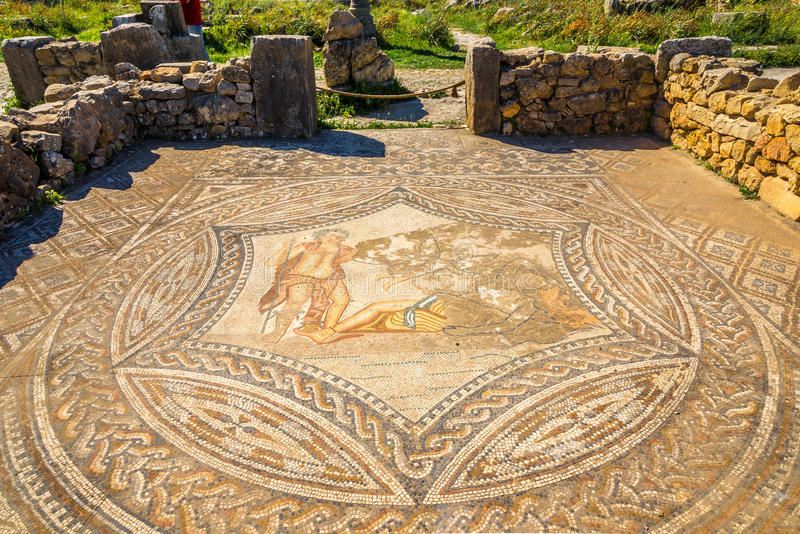
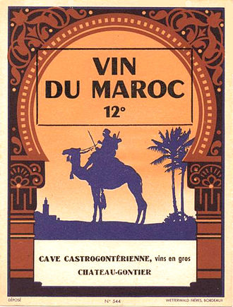
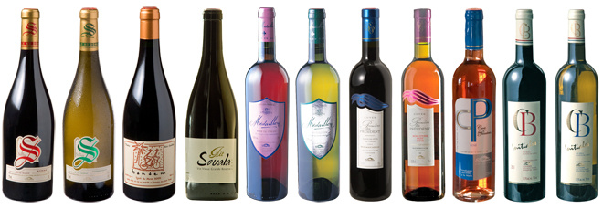

Vins du Maroc
De l'Antiquité à l'époque contemporaine
Avec ses vins rouges, blancs et même rosés, le Maroc est le deuxième grand producteur dans le monde arabe. C'est aussi l'un des berceaux des dernières vignes sauvages. Retour sur l'histoire vinicole du pays où la tradition persiste depuis l'Antiquité et où, depuis quelques décennies, l'ambition d'offrir la plus belle expression du terroir est devenu fer de lance.
Le Maroc viticole à l'Antiquité :
La vigne, dénominateur communs des diverses civilisations qui se sont succédées
Ces sont les Carthaginois qui introduisirent les vignes au Maroc, faisant de ce pays l'un des tout premiers producteurs de vin du monde !
La viticulture au Maroc remonte ainsi à l'Antiquité, la vigne étant principalement cultivée autour de Volubilis en Maurétanie Tingitane, la région actuelle de Meknès. À l'époque, cette ville antique berbère romanisée était réputée pour le commerce : L'installation de comptoirs phéniciens et grecs répandus dans le pourtour de la Méditerranée favorisaient l'échange de nombreuses des denrées alimentaires, dont le vin contenu dans des amphores. C'est surtout grâce à la colonisation romaine que la viticulture s'est développée. La conquête musulmane n'a pas endigué la viticulture nord-africaine, même si toutefois elle privilégia le raisin de table. Ainsi, le Maroc viticole est né d'une identité très forte liée à son histoire sur un territoire où la vigne est commune aux diverses civilisations qui s'y sont succédées.
Le Maroc viticole à l'époque moderne : De la production de masse à la volonté d'une politique de qualité
Avec la colonisation au XXème siècle, les Français ont fortement développé la viticulture nord-africaine à cause du phylloxéra qui ravageait la plus grande partie des vignobles européens dès 1875. Des vignobles furent créés par des négociants français, qui s'approvisionnaient en vin, en témoigne l'étiquette ci-contre. Quelques cépages français furent greffés et la culture devint intensive, parmi lesquels le Grenache, le Carignan, le Cinsault, et l'Alicante Bouschet, réputés plus adaptés aux terroirs marocains pour produire les vins désirés. Ce fut le début d'une production de masse de la viticulture marocaine où le rendement importait plus au détriment de la qualité. S'obtenaient ainsi des vins très colorés et à fort degré d'alcool. La plupart des vins étaient exportés vers le Languedoc afin d'enrichir en alcool par coupage la production de masse des vins de tables du Sud de la France.
Un tournant marque la viticulture moderne du Maroc : En 1923, une société belge s'installe près de Ben Slimane dans la région de Casablanca pour y créer un domaine viticole dont la première vendange eut lieu en 1927. Ce domaine est actuellement la propriété de Thalvin et porte le nom des Ouled Thaleb. À cette époque de prospérité, d'autres domaines d'un seul tenant furent créés sous le même nom autour de Meknès, Rabat, Tiflet et Khemisset. En 1934 la première appellation est délimitée géographiquement : les vins sont classés par vins de tables AOG (Appellation d'Origine Garantie) ou AOC.
En 1956, l'Indépendance retrouvée, le Maroc ne renonce pas à la production de vin : le Royaume hérite de ces caves et vignobles alors nationalisés, même si toutefois la viticulture s'est vue réduite pour des raisons culturelles et religieuses. Lorsqu'en 1967, le Traité de Rome interdit le coupage des vins de la CEE avec ceux étrangers. Pour le Maroc, s'entame une période de marasme : le pays perd le marché se confrontant alors à une crise de surproduction, certaines vignes sont arrachées et des caves se ferment. Pourtant, cette mesure engendra un nouvel élan dans la production marocaine : les viticulteurs étant contraints de délaisser le vrac en rendement, ont dû s'orienter vers la mise en bouteille et la vente à l'unité (domaines et caves coopératives) à partir de cépages plus qualitatifs tels que le Chardonnays, la Roussanne, la Syrah, les Cabernets. Mise en place en 1972, l'État crée la SODEA (Société de Développement Agricole) qui gère le patrimoine viti-vinicole du pays, soit une vingtaine de caves et favorise son développement en dépit des fortes taxes de consommation intérieures instaurées en 1979. Résultat : Le marché local s'effondre, entraînant une diminution des ventes. Une chute qui perdure jusqu'en 1999 liée à une fiscalité prohibitive et une réglementation stricte ne favorisa pas l'essor de la SODEA alors confrontée à la nécessité de nombreux investissements face à la sécheresse (groupes froids pour les vendanges, installation de système d'irrigations...).Certains acteurs de la filière lui reprochent son manque de dynamisme. Si à sa création, elle avait le monopole de la production vinicole, à présent endettée, la SODEA ne possède plus qu'une dizaine de caves représentant la moitié de la production nationale.
Le Maroc viticole l'époque contemporaine : Une opportunité de croissance grâce aux sociétés de partenariat Des nos jours la région de Meknès représente de nous jours à elle seule la moitié du vignoble marocain. Le Maroc fait partie des États membres de l'Organisation Internationale de la Vigne et du Vin. En dépit d'une politique restrictive, le vin reste un secteur économique en plein essor avec une production de plus de 40 millions de bouteilles par an. Ce qui fait du Maroc le deuxième grand producteur vinicole dans le monde arabe. En 2008, le Ministère de l'Agriculture autorisa pour la première fois un domaine viticole à porter l'appellation "Château" avec le Château Roslane, sous l'AOC "les coteaux de l'Atlas", premier cru. La qualité des vins du Maroc ne cesse de progresser grâce à l'évolution de la réglementation, aux efforts en matière de recherche viticole et aux initiatives des locaux. Une bien longue épopée quand on considère l'héritage du Maroc viticole, qui reste d'ailleurs l'un des berceaux des dernières vignes sauvages.
Focus sur les appellations marocaines Le Maroc compte 1 AOC et 14 AOG (Guerrouane et Beni M'Tir (région de Meknès), Angad et Berkane (région de l'Oriental), Chella (région du Rharb), Zare, Zenata et Doukkala (région de Casablanca où est produit le célèbre vin gris qui est en fait rosé, provenant du Grenache Gris), Saïs, Beni-Sadden, Zerboune, Zemmour, Gharb et Zaër). Cépages vins rouges et rosés: Cinsault, Carignan, Alicante Bouschet, Syrah, Grenache, Cabernet-sauvignon, Merlot, Tempranillo, Malbec, Tannat Mourvèdre Cépages vins blancs : Chardonnay, Grenache blanc,Marsanne, Roussanne, Sauvignon, Vermentino, Ugni blanc, Clairette, Muscat, Viognier, Bourboulenc, "Faranat" de Tunis. Climat : influences océaniques, méditerranéennes, montagnardes, continentales et sahariennes. Le Maroc, regardant à la fois la Méditerranée et l'Atlantique, bénéficie de l'influence océanique et de celle des montagnes de l'Atlas, qui apportent une fraîcheur nécessaire en ces contrées arides et très chaudes. Les vignobles en coteaux et la température clémente font de la région de Meknès le terroir viticole privilégié